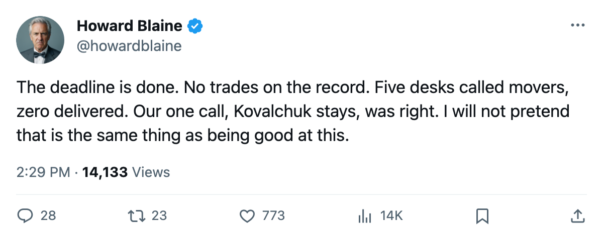
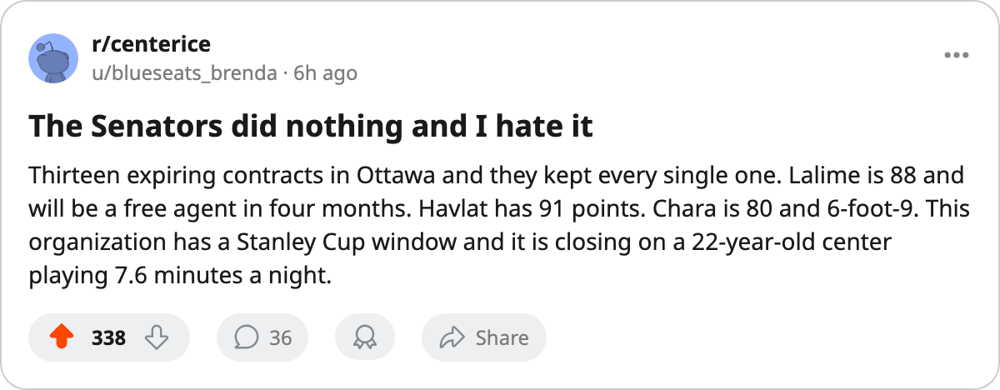

NYI
NYIThe Ledger: what the calendar has as the trade deadline produced no trades, five desk misses, and one hit
Hot-stove called five players moving. None moved. The Hockey Gazette called one player staying, and was right.
 Howard BlaineSenior writer, The Blaine Rankings · The Hockey Gazette
Howard BlaineSenior writer, The Blaine Rankings · The Hockey Gazette
What the calendar has as the trade deadline arrived on 2005-03-19 and produced no confirmed transaction on the record. Five desks called specific players as movers. None of the five was right.
The hot-stove desk logged five separate trade predictions between 2005-03-05 and 2005-03-14: Chris Pronger out of  St. Louis Blues, Brad Stuart out of
St. Louis Blues, Brad Stuart out of  San Jose Sharks,
San Jose Sharks,  Martin Havlat88,
Martin Havlat88,  Patrick Lalime90, or Zdeno Chara out of
Patrick Lalime90, or Zdeno Chara out of  Ottawa Senators, Sean Avery or Ian Laperriere out of
Ottawa Senators, Sean Avery or Ian Laperriere out of  Los Angeles Kings, and Thibault, Daze, Zhamnov, or Sullivan out of
Los Angeles Kings, and Thibault, Daze, Zhamnov, or Sullivan out of  Chicago Blackhawks. The desk is now 0 for 5 on deadline trade calls, and 7 for 23 overall across all categories, a 30 percent settled rate.
Chicago Blackhawks. The desk is now 0 for 5 on deadline trade calls, and 7 for 23 overall across all categories, a 30 percent settled rate.
Every named player is still on his club's active roster as of the deadline date. Pronger at 86 overall on $9.50M with one year left, still in St. Louis. Stuart at 79 on $1.80M, still in San Jose. Lalime at 88, Havlat at 84, Chara at 80, all still in Ottawa. Avery at 73, Laperriere at 71, still in Los Angeles. Thibault at 90, Daze at 87, Zhamnov at 85, Sullivan at 85, all still in Chicago.
The table below lists every player the desks named, with his current grade, salary, and contract situation.
| Player | Club | Overall | Salary ($M) | Years left |
|---|---|---|---|---|
| Chris Pronger | STL | 86 | $9.50 | 1 |
| Patrick Lalime | OTT | 88 | $1.90 | 1 |
 Jocelyn Thibault90 Jocelyn Thibault90 | CHI | 90 | $2.80 | 1 |
 Eric Daze87 Eric Daze87 | CHI | 87 | $3.00 | 1 |
 Alexei Zhamnov85 Alexei Zhamnov85 | CHI | 85 | $4.20 | 1 |
| Steve Sullivan | CHI | 85 | $3.00 | 1 |
| Martin Havlat | OTT | 84 | $0.90 | 1 |
| Zdeno Chara | OTT | 80 | $1.70 | 1 |
| Brad Stuart | SJ | 79 | $1.80 | 1 |
| Sean Avery | LA | 73 | $0.40 | 2 |
| Ian Laperriere | LA | 71 | $0.90 | 2 |
Ottawa had the clearest case for a sell-off. Thirteen players on expiring contracts worth $20.40M in total salary, against a club payroll of $42.80M across 31 men at an average of $1.38M. The Senators are 67 points with 9 games left and a maximum of 85, which is 9 points back of  New York Rangers at 76 in the 8th Eastern spot. Their divisional record against
New York Rangers at 76 in the 8th Eastern spot. Their divisional record against  Toronto Maple Leafs is 1-2-1 with one overtime loss, against
Toronto Maple Leafs is 1-2-1 with one overtime loss, against  Boston Bruins 1-2-0 with one overtime win. Closing that gap would require almost every remaining opponent to lose.
Boston Bruins 1-2-0 with one overtime win. Closing that gap would require almost every remaining opponent to lose.
Ottawa kept Lalime, Havlat, and Chara. The general manager made a decision, could not find a counterparty, or decided the return was not enough. The record does not say which.
New York (Islanders) faced a similar arithmetic. Thirteen expiring contracts, $23.67M in total, against a $52.47M payroll, the largest expiring commitment in the league by salary. The rest of the roster is replaceable talent on cheap deals, and the club moved none of it.
This desk's one deadline call was logged on 2005-03-02:  Ilya Kovalchuk90 would still be on
Ilya Kovalchuk90 would still be on  Atlanta Thrashers after the deadline. He is. That makes the Hockey Gazette 1 for 1 on deadline-season predictions this year, a small sample the desk notes without reading much into it.
Atlanta Thrashers after the deadline. He is. That makes the Hockey Gazette 1 for 1 on deadline-season predictions this year, a small sample the desk notes without reading much into it.
A quiet deadline with 18 days left
With 146 games remaining in the regular season and the last one on 2005-04-06, each club has 9 or 10 games left to play on its current roster. Nobody bought, and nobody sold. The rosters that began March will finish the season.
Phoenix sits in the 8th Western spot at 76 points with 11 games left and a maximum of 98. St. Louis is 5 points back at 71 with 11 left and a maximum of 93. Both clubs had players the hot-stove desk called as movers. Neither moved.  Phoenix Coyotes will try to hold 8th with the same roster that scored 205 goals in 71 games and owns minus-11 hockey. St. Louis Blues will try to take it with the roster that scored 208 in 71 and owns minus-41 hockey on a $57.44M payroll.
Phoenix Coyotes will try to hold 8th with the same roster that scored 205 goals in 71 games and owns minus-11 hockey. St. Louis Blues will try to take it with the roster that scored 208 in 71 and owns minus-41 hockey on a $57.44M payroll.
The Atlanta question remains open in a different way. The Thrashers have 78 points, 11 games left, a maximum of 100, and 2 points back of 8th. Their two 100-point forwards are both on contracts that expire in the summer. Nobody moved them by the deadline. That does not mean they will be re-signed. The decision has moved to the summer, where the $36.79M payroll will have to find the money and the minutes to keep both.
The 18 days until 2005-04-06 will show whether the quiet deadline proved correct, and the final standings will carry more weight than any prediction logged here.

